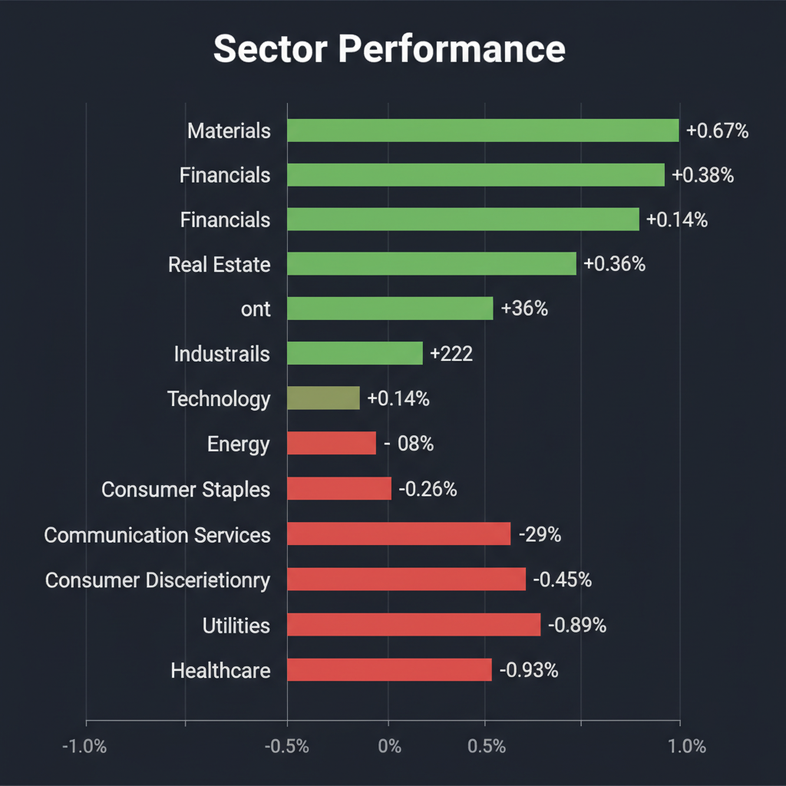
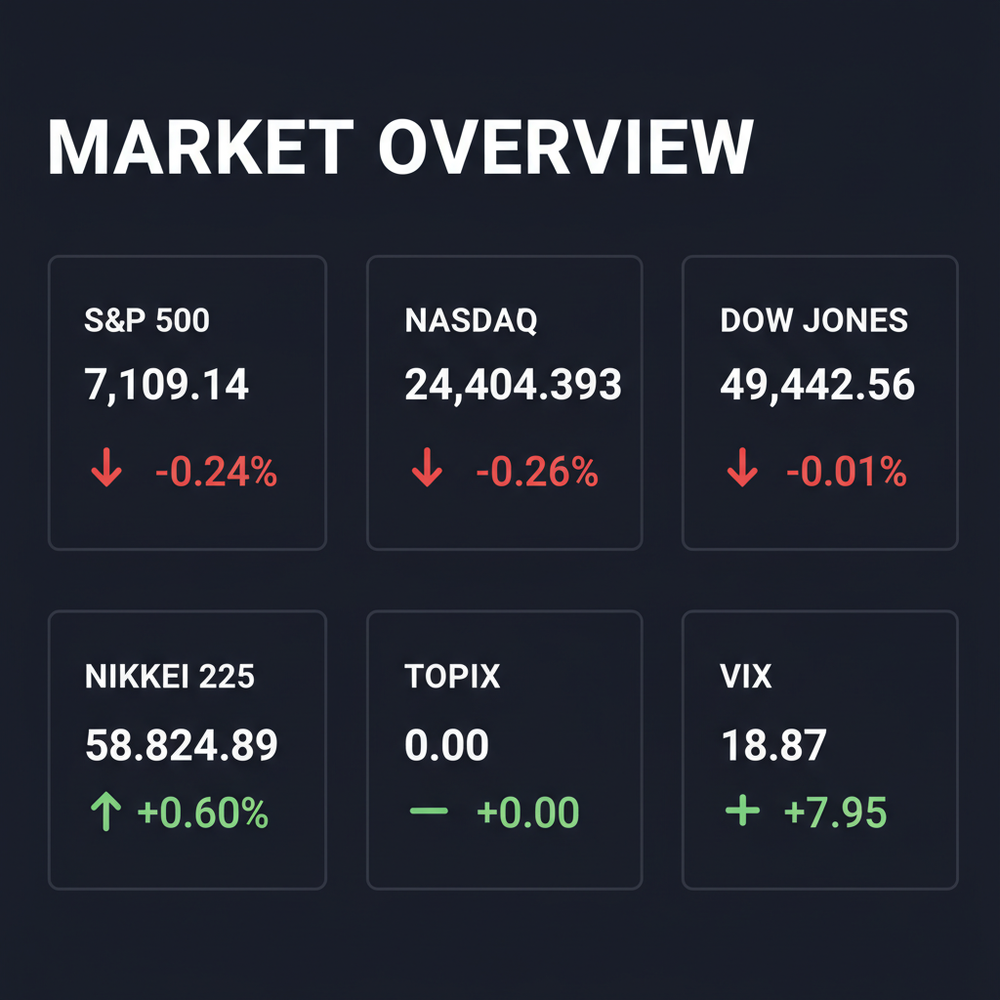

Daily Investment Report - 2026-04-21
Generated: 2026/4/21 7:24:50


本日の投資チームミーティングにおける各専門家からの分析を統合した、投資家向けの最終レポートをお届けします。
1. エグゼクティブサマリー
- 米イランの緊張再燃による原油高とVIX指数の急騰（18.87）を受け、市場は「スタグフレーション」と「利下げ期待の後退」というダウンサイドリスクを急速に織り込み始めています。
- 日本市場は「高市トレード」により日経平均5万8000円台という歴史的高値圏にありますが、テクニカル面では「5日線上の十字足」が出現し、ADRの下落と併せてトレンド転換（天井）の強いシグナルが点灯しています。
- 現在は利益を最大化するよりも致命傷を避けるべき局面であり、キャッシュ比率を引き上げて防衛しつつ、価格転嫁力と強固な財務を持つ一部の「隠れた中小型株」の押し目のみを狙う戦略が推奨されます。
2. 注目銘柄リスト
強気（買い推奨）
- 日進工具（5919.T） [時価総額: 約400億円]: 超硬小径エンドミルで圧倒的シェアを誇り、営業利益率約20%・自己資本比率80%超の実質無借金経営であるため、AIエージェント普及に伴う微細加工需要を安全に享受できる隠れた成長株です。
- ミリオン・テクノロジーズ [時価総額: 小型株水準]: AIデータセンター増設に伴う「原子力ルネサンス」の恩恵を受ける放射線測定事業を手掛けており、極めて高い参入障壁を持つため、機関投資家に認知される前の今が仕込み時となるテンバガー候補です。
- ゲオHD（2681.T） [時価総額: 約1,000億円]: 低採算のレンタル事業から高収益のリユース事業への構造転換を進めており、インフレ下での消費者の節約志向を追い風に、海外店舗展開の急拡大による抜本的な利益改善が見込めます。
中立（様子見）
- 米国の小型半導体設計ファブレス企業群 [時価総額: 約200億〜2,000億円]: 次世代エッジAI向けとしてのテーマ性は抜群ですが、営業キャッシュフローが赤字の企業は高金利下での資金枯渇リスクがあるため、EV/EBITDA等で割安さが証明されるまで静観が必要です。
- コーエーテクモHD（3635.T） [時価総額: 中大型株水準]: 直近で好決算を発表したものの、営業外の有価証券運用（シブサワ・ファンド）への依存度が高く、現在のボラティリティの高い相場環境では純利益のブレ幅が大きくなる懸念があります。
弱気（警戒）
- ジェットブルー（JBLU） [時価総額: 中型株水準]: 中東情勢に伴う燃料費の急騰が直撃しており、価格転嫁が難しいため営業キャッシュフローの赤字化と過剰債務による業績悪化リスクが極めて高い状態です。
- 日産自動車（7201.T） [時価総額: 大型株水準]: 表面的なバリュエーション（PBR/PER）は割安に見えますが、北米市場での販売奨励金増加によるマージン低下と、利益を削ってシェアを取る無理な販売増目標がFCFを毀損する典型的なバリュートラップです。
3. セクター推奨ランキング
インフレ再燃と原油高（89ドル台）の直接的な恩恵を受け、価格転嫁力を持つ川上産業としてマクロ環境の逆風下でもディフェンシブに機能します。
AIデータセンターの電力不足解消に向けた「原子力への回帰」は不可逆的なマクロトレンドであり、長期的かつ安定的な成長が期待されます。
画期的な新薬を持つ企業は価格弾力性が低く、マクロ要因に左右されない強固な成長を見込めますが、既にバリュエーションが高騰しているため銘柄選別が必須です。
構造的な成長テーマですが、金利高止まり局面では高PER銘柄のマルチプル収縮リスクが伴うため、押し目買いのタイミングを厳格に見極める必要があります。
原油高による強烈なコスト圧迫と、インフレ転嫁によるホリデーシーズンの実質的な消費需要減退が直撃するため、当面はアロケーションを下げるべきセクターです。
4. 今週の注目イベント
- 4月21日：オービック 決算発表
- 4月21日：都市ファンド 決算発表
- 4月21日：オリックスF 決算発表
5. リスク要因
- スタグフレーション・ショック： ホルムズ海峡の混乱で原油価格がさらに高騰し、FRBの年内利下げコンセンサスが完全に崩壊することで、高バリュエーションのハイテク株が急落するリスク。
- 日本株バブルの急激な巻き戻し： 「高市トレード」への過度な期待が剥落した際、海外投資家の利益確定売り（ADRの下落が先行）により、日経平均が先物主導で壊滅的なリバーサル（逆回転）を起こすリスク。
- ボラティリティの連鎖反応： VIX指数が心理的節目の20を上抜けてブレイクアウトした場合、アルゴリズム取引による機械的な売りが発動し、市場全体が明確なダウントレンドに転落するリスク。
- 相関リスクの露呈： マイクロンなどの特定テクノロジー企業に市場のラリーが過度に依存しているため、一角の決算やガイダンスがわずかでも未達となった場合、インデックス全体が連れ安となるリスク。
6. アクションアイテム
- キャッシュ比率の大幅な引き上げ： 新規のエントリー（買い）は原則として見送り、ポートフォリオの現金比率を通常の1.5〜2倍程度まで引き上げて下落相場に備えてください。
- 既存ポジションへのタイトなストップロスの設定： 現在保有している銘柄群に対し、直近安値や20日移動平均線の少し下など、機械的に利益を確定・損失を限定する逆指値注文を直ちに入れてください。
- テールリスクへのヘッジ実行： VIXがまだ20を下回っている現在のうちに、VIXコールオプションや主要指数のプットオプションを購入し、市場クラッシュに対する保険をかけてください。
- インフレ耐性・好財務な中小型株のリストアップ： 全体相場の急落時（パニック売り）に底値で拾うため、日進工具やミリオン・テクノロジーズのような「価格決定力を持つニッチトップ・好財務銘柄」の監視を強化してください。